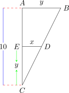
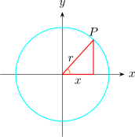

22 Equations of a Straight Line
We can write the equation of a straight line if
- 1.
-
- i.
- we are given two points where the line passes \((x_1,y_1)\) and \((x_2,y_2)\).
- ii.
- we find the gradient using the formula \[m = \dfrac {y_2 - y_1}{x_2 - x_1}\]
- iii.
- using one of the equation point our equation is \[ y - y_1 = m(x - x_1)\]
- 2.
- If we are given one point \((x,y)\) and a gradient, we can write the equation as \[y- y_1 = m(x - x_1)\]
- 3.
- If you are given one point and the equation of the line which is parallel to the vertical equation.
- 4.
- If you are given a point of intersection of two line but perpendicular to the given
line.

\begin {align*} AB^2 & = AC^2 + BC^2\\ AB^2 & = (x_2 - x_1)^2 + (y_1 - y_2)^2\\\\ AB & = \sqrt {(x_2 - x_1)^2 + (y_2 - y_1)^2} \end {align*}

Using Pythagoras theorem \(\hspace {0.2cm} x^2 + y^2 = r^2.\hspace {0.2cm}\) This is the equation of the circle with center \((0,0)\) radius \(r\).
- 1.
- Find the gradient of the circle.
- 2.
- Find the equation of the tangent and normal to the circle with centre \((0,0),\hspace {0.3cm} r = 9\hspace {0.2cm}\) at \(\hspace {0.2cm} x = 1\)
\(\implies \hspace {0.3cm} \) we find \(\hspace {0.2cm}\dfrac {dy}{dx}\hspace {0.2cm}\) of the equation of the circle
Equation of the tangent: \(\hspace {0.3cm} y - f(x_0) = f'(x_0) \big ( x - x_0\big )\)
- \(*\)
- The Cartesian equation of the circle center \((0,0)\) and radius \(r\) is \(x^2 + y^2 = r^2\)
- 1.
- The Cartesian equation of the circle, center \((h,k)\) and radius \(r\) is \((x - h)^2 + (y - k)^2 = r^2\)
- 2.
- The general equation of a circle is usually in the form \(x^2 + y^2 + 2gx + 2fy + c = 0\) where \(g, \hspace {0.2cm} f\) and \(c\) are constants.
- 1.
- The equation is second degree because \(x^2\) and \(y^2\), are the highest power term.
- 2.
- The coefficients of \(x^2\) and \(y^2\) are same.
- 3.
- There is no term \(xy\)
\begin {align*} \implies \hspace {0.3cm} x^2 + 2gx & = x^2 + 2gx + g^2 - g^2\\ & = \big (x + g\big )^2 - g^2 \end {align*}
\[\implies \hspace {0.3cm} y^2 + 2fy = \big (y + f\big )^2 - f^2\]
\begin {align*} x^2 + 2gx + y^2 + 2fy + c & = 0\\ \big (x + g\big )^2 + \big (y + f\big )^2 & = g^2 + f^2 - c\\ \implies \hspace {0.4cm} \big (x + g\big )^2 + \big (y + f\big )^2 & = \Big ( \sqrt {g^2 + f^2 - c}\Big )^2 \end {align*}
This is a circle centre \(\hspace {0.2cm} (-g,-f)\hspace {0.2cm}\) and radius \(\hspace {0.2cm} r = \sqrt {g^2 + f^2 - c}\).
- 1.
- Find in Cartesian form an equation of the circle with center \((-3,5)\) and \(r = 4\).
Working
Since we know the center, we use the standard form of a circle. \begin {align*} (x - h)^2 + (y - k)^2 & = r^2\\ (x + 3)^2 + (y - 5)^2 & = 4^2\\ x^2 + 6x + 9 + y^2 - 10y + 25 & = 16\\ x^2 + y^2 + 6x - 10y + 34 - 16 & = 0\\\\ \therefore \hspace {0.5cm} x^2 + y^2 +6x - 10y + 18 & = 0\hspace {0.4cm} \text {general form}\\ \end {align*} - 2.
- Find the coordinates of the center and the radius of the circle with equation
\[2x^2 + 2y^2 - 18x + 12y + \dfrac {3}{2} = 0\]
Ans: \(\hspace {0.3cm}\) center \(\Big (\dfrac {9}{2}, -3\Big )\hspace {0.3cm}, \hspace {0.3cm} r = \sqrt {\dfrac {57}{2}}\)
Find the Cartesian form, an equation of the circle passing through the points \(A(1,6),\hspace {0.2cm} B(3,2)\) and \(C(2,3)\).
Solution.
- Method 1
The center of the required circle lies on the perpendicular bisector of \(AB\).
Therefore, the midpoint of \(AB\) using the formula \(\hspace {0.3cm}\Big (\dfrac {x_1 + x_2}{2}, \dfrac {y_1 + y_2}{2}\Big )\)
\[\Big (\dfrac {1 + 3}{2},\dfrac {6 + 2}{2}\Big ) = (2,4)\]

We find the gradient of \(AB\) \[m = \dfrac {6-2}{1-3} = -2\]
\begin {align*} y - y_1 & = m_2 (x - x_1)\\ \implies \hspace {0.4cm} y - 4 & = \dfrac {1}{2}(x - 2)\\ 2y - 8 & = x - 2\\\\ \therefore \hspace {0.5cm} 2y - x - 6 & = 0\hspace {0.4cm}\cdots \hspace {0.5cm} (1) \end {align*}
The center of the circle lie also on the perpendicular bisector of \(BC\).
Midpoint of \(BC\) is \(\hspace {0.3cm} \Big (\dfrac {3 + 2}{2}, \dfrac {2 + 3}{2}\Big ) = \Big (2\dfrac {1}{2},2\dfrac {1}{2}\Big )\)
Gradient of \(BC =\dfrac {3 - 2}{2 - 3} = -1\)
\[\therefore \hspace {0.5cm} y - 2\dfrac {1}{2} = 1\Big (x - 2\dfrac {1}{2}\Big )\]
\[\implies \hspace {0.4cm} y = x \hspace {0.5cm}\cdots \hspace {0.4cm} (2)\]
\begin {align*} \text {Now},\hspace {1cm} 2y - x - 6 & = 0\\ y & = x\\\\ \implies \hspace {0.4cm} 2x - x & = 6 \end {align*}
\[x = 6\hspace {0.5cm},\hspace {0.5cm} y = 6\]
\(\therefore \hspace {0.5cm} (6,6)\hspace {0.2cm}\) is the centre of the circle.
\[r^2 = (6-1)^2 + (6-6)^2 = 25\]
Our equation in standard form is \((x - 6)^2 + (y - 6)^2 = 25\)
- Method 2
\(x^2 + y^2 + 2gx + 2fy + c = 0\)
At \((6,1)\), we have \begin {align*} 1^2 + 6^2 + 2g(1) + 2(6)f + c & = 0\\ \implies \hspace {0.3cm} 1 + 36 + 2g + 12f + c & = 0\\ \therefore \hspace {0.4cm} 37 + 2g + 12f + c & = 0\hspace {0.4cm} \cdots \hspace {0.3cm} (1)\\ \end {align*}
At \((3,2)\), we have \begin {align*} 3^2 +2^2 + 2g(3) + 2(2)f + c & = 0\\ \implies \hspace {0.4cm} 9 + 4 + 6g + 4f + c & = 0\\ \implies \hspace {0.4cm} 6g + 4f + c + 13 & = 0\hspace {0.4cm} \cdots \hspace {0.3cm} (2)\\ \end {align*}
At \((2,3)\), we have \begin {align*} 2^2 + 3^2 + 2g(2) + 2f(3) + c & = 0\\ \implies \hspace {0.4cm} 4g + 6f + 13 + c & = 0\hspace {0.4cm} \cdots \hspace {0.3cm} (3)\\ \end {align*}
We solve for \(\hspace {0.2cm} g, f, c\) \begin {align*} 37 + 2g + 12f + c & = 0\hspace {0.4cm} \cdots \hspace {0.3cm} (1)\\ 13 + 6g + 4f + c & = 0\hspace {0.4cm} \cdots \hspace {0.3cm} (2)\\ 13 + 4g + 6f + c & = 0\hspace {0.4cm} \cdots \hspace {0.3cm} (3) \end {align*}
And we get \(\hspace {0.3cm} g = -6\hspace {0.2cm}, \hspace {0.3cm} f = -6\hspace {0.2cm} , \hspace {0.3cm} c = 47\)
22.2 The Equation and Proportional of Tangents to a Circle
22.3 The Distance of a Point from a Line
22.4 Division of a Line in a Given Ratio
22.4.1 Internal Division of a Line Segment
22.4.2 External Division of the Line Segment
22.5 Concentric Circles
22.6 Constant of Circles
Questions on this section
Stuck on something here? Ask below and it stays attached to this topic.